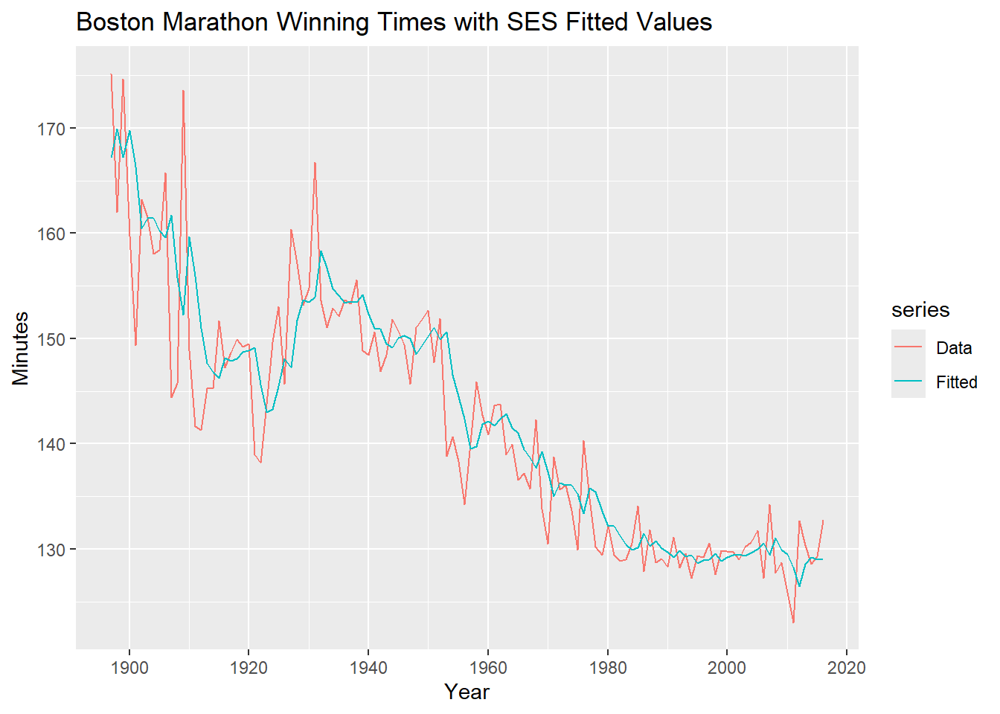
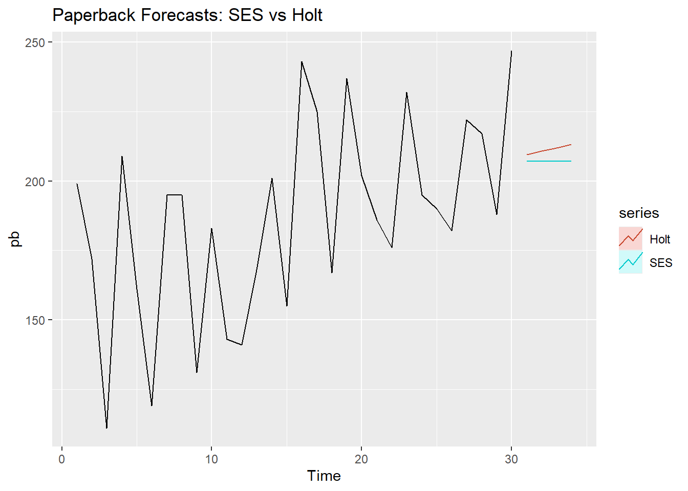
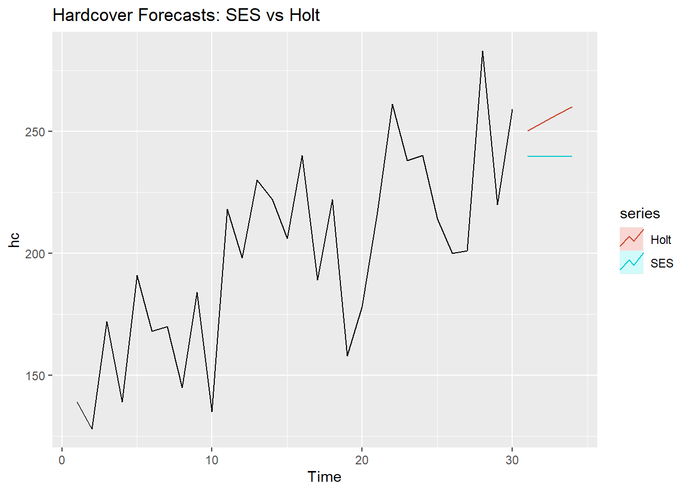

1. For the marathon data set in library fpp2 write your own functions to implement simple exponential smoothing. You need to calculate error sums of squares and estimate the parameters 𝛼 and ℓ0. The function should take arguments y (the time series), alpha (the smoothing parameter 𝛼) and level (the initial level ℓ0). It should return the forecast of the next observation in the series. Does it give the same forecast as ses()?
Show R code
# library for the datasetlibrary(fpp2)dat_q1 <- marathon # function for simple exponential smoothingsimp_ets <-function(y, alpha, level){ n <-length(y) yhat <-numeric(n) yhat[1] <- levelfor (i in2:n){ yhat[i] <- alpha * y[i-1] + (1- alpha) * yhat[i-1] } next_fc <- alpha * y[n] + (1- alpha) * yhat[n]return(list(forecast = next_fc, fitted = yhat))}# fitted using the ses functionfit <-ses(y = dat_q1, h =1)# optimal values extracted for mineres <-simp_ets(y = dat_q1, alpha = fit$model$par[1], level = fit$model$par[2])# comparison using a data frame to display as a tabledata.frame(My_Forecast = res$forecast, SES_Forecast =as.numeric(fit$mean))
My_Forecast SES_Forecast
alpha 130.3563 130.3563
Yes the values are the same
2. Use simple exponential smoothing to obtain a point forecast for 2017, and a prediction interval for 2017. With and without the ses() function. The estimates should be exactly the same.
Show R code
# for the manual prediction intervalssig <-sd(dat_q1 - fit$fitted)pi_l_manual <- res$forecast -1.96* sigpi_u_manual <- res$forecast +1.96* sig# using sesfit_pi <-ses(y = dat_q1, h =1, level =95)pi_l_ses <- fit_pi$lower[1]pi_u_ses <- fit_pi$upper[1]data.frame(Method =c("Manual", "ses() Function"),Forecast =c(res$forecast, as.numeric(fit_pi$mean)),Lower_PI =c(pi_l_manual, pi_l_ses),Upper_PI =c(pi_u_manual, pi_u_ses))
autoplot(dat_q1, series ="Data") +autolayer(fit$fitted, series ="Fitted") +ggtitle("Boston Marathon Winning Times with SES Fitted Values") +ylab("Minutes") +xlab("Year")

The fit seems to be quite bad. Its not able to capture much variation in the data
4. Obtain an estimate for 𝜎
Show R code
sig
[1] 5.422984
Question 2
Consider the oil series (annual oil production in Saudi Arabia, in library fpp2). Use the ses() function in R to find the optimal values of 𝛼 and ℓ0, and generate forecasts for the next four years. Compute a 95% prediction interval for the first forecast using 𝑦̂±1.96×𝑠, where 𝑠 is the standard deviation of the residuals. Compare your interval with the interval produced by R.
Show R code
# loading of dataoil_ts <- oil# forecasting into the next 4 years fit2 <-ses(oil_ts, h =4)# calculates prediction intervalslower_pi <- fit2$mean[1] -1.96*sd(fit2$residuals)upper_pi <- fit2$mean[1] +1.96*sd(fit2$residuals)# ses prediction intervalsmy_pi <-c(lower_pi, upper_pi)r_pi <-c(fit2$lower[1,2], fit2$upper[1,2])data.frame(Method =c("Manual", "ses() Function"),Forecast =c(res$forecast, as.numeric(fit_pi$mean)),Lower_PI =c(lower_pi, r_pi[1]),Upper_PI =c(upper_pi, r_pi[2]))
1. Data set books contains the daily sales of paperback and hardcover books at the same store. The task is to forecast the next four days’ sales for paperback and hardcover books. Plot the series and discuss the main features of the data. Use the ses() function to forecast each series, and plot the forecasts. Compute the RMSE values for the training data in each case.
# datasetspb <- books[,1]hc <- books[,2]# fitting ses on the data ses_pb <-ses(pb, h=4)ses_hc <-ses(hc, h=4)# calculating RMSErmse_ses_pb <-accuracy(ses_pb)[,"RMSE"]rmse_ses_hc <-accuracy(ses_hc)[,"RMSE"]rmse_ses_pb
[1] 33.63769
Show R code
rmse_ses_hc
[1] 31.93101
need to do the interpretation still.
2. Now apply Holt’s linear method to the paperback and hardback series and compute four-day forecasts in each case. Compare the RMSE measures of Holt’s method for the two series to those of simple exponential smoothing in a.). Remember that Holt’s method is using one more parameter than SES. Discuss the merits of the two forecasting methods for these data sets.
3. Compare the forecasts for the two series using both methods. Which do you think is best?
Show R code
autoplot(pb) +autolayer(ses_pb, series="SES", PI=FALSE) +autolayer(holt_pb, series="Holt", PI=FALSE) +ggtitle("Paperback Forecasts: SES vs Holt")

Show R code
autoplot(hc) +autolayer(ses_hc, series="SES", PI=FALSE) +autolayer(holt_hc, series="Holt", PI=FALSE) +ggtitle("Hardcover Forecasts: SES vs Holt")

Not really sure, but I think holt winters
4. Calculate a 95% prediction interval for the first forecast for each series, using the RMSE values and assuming normal errors. Compare your intervals with those produced using ses() and holt().
Method Lower_95 Upper_95
1 SES Manual 141.1798 273.0395
2 SES Function 138.8670 275.3523
3 Holt Manual 148.4384 270.4951
4 Holt Function 143.9130 275.0205
values are close, might be because I used 1.96
Question 5
Simulate data using the state-space model formulation of simple exponential smoothing (and Holt’s exponential smoothing if you want). Then estimate the parameters using optim, and the R functions.
Show R code
# function for ses for exponential smoothingsimulate_ses <-function(n, alpha, l0, sigma) { y <-numeric(n) l <-numeric(n) e <-rnorm(n, 0, sigma) l[1] <- l0 y[1] <- l[1] + e[1] for(t in2:n) { y[t] <- l[t-1] + e[t] l[t] <- l[t-1] + alpha * e[t] }return(ts(y))}# simulating dataset.seed(123)sim_data <-simulate_ses(n=100, alpha=0.3, l0=10, sigma=1)# finding optimal valuessim_opt <-optim(par =c(0.5, sim_data[1]), fn = ses_sse, y = sim_data,method ="L-BFGS-B",lower =c(0, -Inf),upper =c(1, Inf))opt_alpha <- sim_opt$par[1]opt_l0 <- sim_opt$par[2]data.frame(Source =c("True Parameters", "Manual optim()"),Alpha =c(0.3, opt_alpha),Initial_Level_l0 =c(10, opt_l0))
This tutorial helped me connect the exponential smoothing equations to their implementation in R. Writing the simple exponential smoothing function made the role of the smoothing parameter and initial level clearer. My function produced the same point forecast as ses() when using the package’s estimated parameters, which helped me check the updating calculation. Estimating parameters separately using optim() then helped me understand how minimising the sum of squared errors relates to fitting the model.
Comparing simple exponential smoothing with Holt’s linear method helped me distinguish between modelling a changing level and explicitly including a trend. However, I found interpreting the book-sales results more difficult than producing the forecasts. I still need to justify which method is more suitable for each series using the plots and accuracy measures. I also need to correct my reference to Holt–Winters in this exercise, since the comparison uses Holt’s linear method without seasonality. The reported training RMSE values describe in-sample fit; evaluating future forecasting performance would require a chronological test set or time series cross-validation.
Prediction intervals were another area where I need more understanding. My manual intervals were close to the package intervals, but I should investigate differences in variance estimation and the forecast-variance calculation rather than assume the discrepancy is only caused by using 1.96.
The simulation exercise helped connect the state space formulation to parameter estimation because the generating parameters were known. However, a single simulation is not enough to establish how reliably the parameters can be recovered. My next steps are to finish the written interpretations, check the interval calculations, and repeat the simulation across different parameter values and sample sizes.